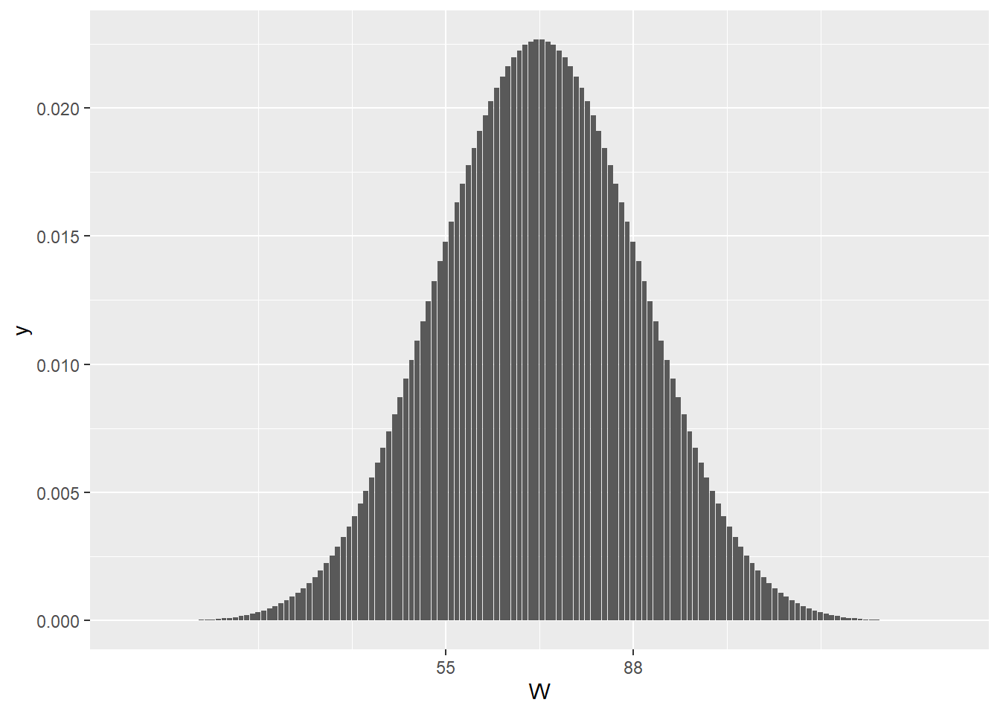

Chapter 20 The t-tests
The t-tests, otherwise known as “Student’s t tests” are for experimental designs that involve testing hypotheses comparing one group to a standard or two groups two each other, and where the outcome variable is continuous and on an equal interval scale.
In other words, t-tests are for measured data in two or fewer groups.
To recall, continuous data are on scales that have values between their intervals. For example, we might use a mass balance to measure the mass of individual mice, and then record how their weight change in response to some factor at two different levels. Here, mass would be an equal interval measurement. Mass is continuous, in so far as a theoretically infite number of values can exist between two units on the scale, depending upon the sensitivity of the measurements.
Derivative continuous variables are common in t-testing. For example, growth rate, in grams/week, is a derivative of the mass and time measurement scales. Like mass and time, growth rate is also continuous.
Just as importantly, the statistics derived from continuous, equal interval data also have the properties of continuous, equal interval data. For example, the means and standard deviations, the standard errors of the mean, and the t-test statistic itself are also scaled continuous.
20.1 Data assumptions for t-tests
The following assumptions should be checked to use t-tests properly.
20.1.0.1 Strong assumptions, t tests are invalid if these not met:
The replicate data arise from a randomized process.
Each sample replicate is independent of every other sample replicate.
20.1.0.2 Weak assumptions: t-tests are less robust when these are not met:
The sampled population for each group is normally distributed.
The variances of the compared groups are equivalent.
The smaller the sample size, the more difficult it is to validate these latter two assumptions. Unless you’re dealing with sample sizes of 30 or greater, it is probably futile to try to make these assessments.
There are two equally valid ways to approach this.
First, a property of continuous data is that it will be normally distributed when it is measured within a linear range on its scale. The same holds for the variance assumption.
There are a normality tests such as the Shapiro-Wilk (shapiro.test), which tests the null hypothesis that the values of a variable are normally-distributed. Levene’s test library(car), leveneTest is useful to test homogeneity of variance. The use of these tests would be proscribed in some preset protocol. If their nulls are rejected, either the data can be normalized through log or reciprocal transformation, or nonparametric testing can be used instead.
Alternately, the researcher can just conduct hypothesis testing using nonparametric procedures. The performance of t-tests and their nonparametric counterparts are virtually identical when the normality and homoscedasticity assumptions are met. Whereas nonparametrics statistics are an appropriate option when these conditions are unmet. On non-normal or heteroscedastic samples false positive detection is reduced slightly by using nonparametric testing compared to t-tests.
20.2 The t Statistic
The t statistic is a ratio signifying the signal to noise ratio in a sample.
The numerator would be a measure for the magnitude of the average effect, whereas the denominator would represent the precision by which those mean differences are determined.
There are three t-tests, reflecting 3 very different experimental designs. The decision to use one or the other t-test is entirely scientific and based upon how the experiment is conducted. If you understand your experimental design, you’ll know which t test is applicable.
One sample tests inspect the difference between a sample mean and a hypothetical mean. Unpaired tests inspect the difference between the means of two groups. *The paired t test inspects the mean difference between paired observations and the value zero.
A common mistake is to default to an unpaired t-test if an uneven number of measurements are in the data set. That is only correct when the measurements are not intrinsically-linked.
20.2.1 One sample t tests
For comparing the mean response \(\bar y\) to a single level of a predictor variable against a hypothetical population mean, \(\mu\). A group comprised of \(n\) independent observations, whose \(\bar y\) The one sample t test has \(n-1\) degrees of freedom.
\[t=\frac{\bar y-\mu}{\frac{sd}{\sqrt n}}\]
20.2.2 Unpaired t tests
This test is used for experiments in which the measurements are all independent from each other. Th unpaired t-test compares the difference between the mean responses to each of two levels, A and B, of a predictor variable. The design is comprised of a total of \(n_A + n_B\) observations and has \((n_A + n_B)-2\) degrees of freedom. \(s^2_p\) is the pooled variance of the sample.
\[t=\frac{\bar y_A-\bar y_B}{\sqrt{\frac{s^2_p}{n_A}+\frac{s^2_p}{n_B}}}\]
The pooled variance is calculated using the sum of the squared deviates \(SS_A\ and\ SS_B\) from each group as follows: \[s^2_p=\frac{SS_A+SS_B}{df_A+df_B}\], where \(df_A=n_A-1\) and \(df_B=n_B-1\).
The denominator of the \(t\) ratio is the standard error of the test. The standard error represents the test’s precision.
Inspection of the pooled variance equation and how it factors into the calculation of the test statistic should give you some indication for why its not a good idea to have unequal sample sizes in unpaired experimental designs. If the sample size for one group is much larger than the other, it’s variance will dominate the \(t\) calculation. That becomes a more significant problem the more unequal are the group variances.
20.2.3 Paired t tests
This test is used when measurements are intrinsically-linked. Each of \(n\) replicates is exposed to both levels, A and B, of a predictor variable. There are \(n\) pairs of measurements in the design. The mean difference \(\bar d\) of the paired responses is compared to the value of zero. \(sd_d\) is the standard deviation of the \(n\) differences. The experiment has \(n-1\) degrees of freedom.
\[t=\frac{\bar d}{\frac{sd_d}{\sqrt n}}\]
20.3 t Test Hypotheses
As for whether to choose a paired or unpaired analysis, the choice of t-test hypotheses depends upon the experimental design, and the scientific question at hand. Resist the temptation to o toggle between two-sided and one-sided options. That’s p-hacking, which is a bias.
Since t-tests are parametric, hypotheses are stated on the basis of the statistical parameters. In this case, the means of the samples are meant to infer the sampled population, so we revert to greek notation.
To put this another way, that the two samples differ is a mathematical fact. We don’t need a statistical test to tell us that. The test helps us infer whether the populations that were sampled differ.
One-sided hypotheses predict the direction of an effect. For example, “the response to treatment will be greater than control.” Or, “the response to treatment will be less than control.”
Two-sided hypothesis do not predict the direction of an effect: “The response to treatment will differ from control, either higher or lower.” Therefore, use a one-sided hypothesis if you think your treatment will go in a specific direction. Choose a two-sided test when you’re not willing to bet on an effect’s direction.
This matters because at the 95% confidence level the threshold value of the t statistic will be lower for a one-sided test ( eg,qt(0.05, 2) than for a two-sided test (qt(0.025, 2)) given the same data. Put another way, the “significance” threshold will always be a higher bar to cross for a two-sided hypothesis. For a one-sided test, all of the 5% cumulative probability is on one side of the distribution. For a two-sided test, that 5% is evenly split to both sides. Therefore, two-sided tests are slightly more stringent.
20.3.1 One sample hypotheses
Two sided: Use when, going into an experiment, you are not sure which direction the predictor variable will change the outcome variable relative to the population mean.
H_0: \(\bar x = \mu\) H_1: \(\bar \ne \mu\)
One sided: Use when, going into an experiment, you are confident the predictor variable will cause the outcome response to be higher than the population mean.
H_0: \(\bar x \le \mu\) H_1: \(\bar x>\mu\)
Or you are confident the predictor variable will cause the outcome response to be lower than the population mean.
H_0: \(\bar x \ge \mu\) H_1: \(\bar x<\mu\)
20.3.2 Unpaired hypotheses
Two sided: Use when, going into an experiment, you are not sure whether level A or B of the predictor will cause a higher outcome response.
H_0: \(\bar x_A = \bar x_B\) H_1: \(\bar x_A \ne \bar x_B\)
One sided: Use when, going into an experiment, you are confident level A of the predictor variable will cause the outcome response to be higher than that for level B.
H_0: \(\bar x_A \le \bar x_B\) H_1: \(\bar x_A > \bar x_B\)
Or when you are confident the level A of the predictor variable will cause the outcome response to be lower than that for level B.
H_0: \(\bar x_A \ge \bar x_B\) H_1: \(\bar x_A < \bar x_B\)
20.3.3 Paired hypotheses
Two sided: Use when, going into an experiment, you are not sure whether the mean difference between levels of the predictor variable will be less than or greater than zero.
H_0: \(\bar x = 0\) H_1: \(\bar x \ne 0\)
One sided: Use when, going into an experiment, you are confident the mean difference between levels of the predictor will be greater than zero.
H_0: \(\bar x \le 0\) H_1: \(\bar x>0\)
Or when, going into an experiment, you are confident the mean difference between levels of the predictor will be less than zero.
H_0: \(\bar x \ge 0\) H_1: \(\bar x<0\)
20.4 Confidence Intervals of Means
A 95% confidence interval is an inferential statistic that allows for estimating the accuracy of a sample. The 95% CI is the range of values in which there is a 95% chance the true mean exists.
A 95% CI can be calculated as follows:
\(mean\pm qt(0.975, df)*\frac{sd}{\sqrt n}\)
For example, given a sample size of n=3, that has a mean of 100. and a standard deviation of 25
upper.limit <- 100+qt(0.975, 2)*(25/sqrt(3))
lower.limit <- 100-qt(0.975, 2)*(25/sqrt(3))
upper.limit## [1] 162.1034lower.limit## [1] 37.8965620.5 t Tests: Running the analysis
In R t.test represents a single function by which each of the three t test experimental designs can be analyzed.
20.5.1 One sample t test
Let’s say a standard to measure against is the value of 100. We can ask if a random sample that is 2-fold greater is different than 100, less than 100, or greater than 100:
set.seed(1234)
a <- rnorm(3, mean=200, sd=25)
t.test(a, mu=100, alternative="two.sided" )##
## One Sample t-test
##
## data: a
## t = 6.0375, df = 2, p-value = 0.02635
## alternative hypothesis: true mean is not equal to 100
## 95 percent confidence interval:
## 129.1056 273.4744
## sample estimates:
## mean of x
## 201.29t.test(a, mu=100, alternative="less")##
## One Sample t-test
##
## data: a
## t = 6.0375, df = 2, p-value = 0.9868
## alternative hypothesis: true mean is less than 100
## 95 percent confidence interval:
## -Inf 250.2778
## sample estimates:
## mean of x
## 201.29t.test(a, mu=100, alternative ="greater")##
## One Sample t-test
##
## data: a
## t = 6.0375, df = 2, p-value = 0.01318
## alternative hypothesis: true mean is greater than 100
## 95 percent confidence interval:
## 152.3023 Inf
## sample estimates:
## mean of x
## 201.2920.5.1.1 Interpretation
t is a descriptive statistic. Notice how the t-value doesn’t change. The same sample will give the same signal to noise ratio, irrespective of the hypothesis tested.
The p-value is the probability of making a type1 error by rejecting the null hypothesis.
The p-value differs, given the hypothesis argument. The p-value is an inferential statistic. Notice how the p-value for a two sided test is larger than for a one sided test.
Notice how the alternative output corresponds to the alternative input.
Notice how the 95% confidence level is the default output. If you want a differnt confidence level, enter an argument for it.
The 95% Confidence Interval differs for each hypothesis. Like the p-value, that indicates the 95% CI is an inferential statistic.
The simplest way to get a typical 95%CI of a mean in R is to run a two.sided t.test and pull it out of that.
20.5.2 Unpaired t test
Now will pull two random samples: one from a normal distribution that has a mean of 200, and the second from a distribution that has a mean of 100. Both have standard deviations of 25. Will these random samples differ?
set.seed(1234)
a <- rnorm(3, mean=200, sd=25)
b <- rnorm(3, mean=100, sd=25)
t.test(a, mu=100, alternative="two.sided" )##
## One Sample t-test
##
## data: a
## t = 6.0375, df = 2, p-value = 0.02635
## alternative hypothesis: true mean is not equal to 100
## 95 percent confidence interval:
## 129.1056 273.4744
## sample estimates:
## mean of x
## 201.29t.test(a, mu=100, alternative="less")##
## One Sample t-test
##
## data: a
## t = 6.0375, df = 2, p-value = 0.9868
## alternative hypothesis: true mean is less than 100
## 95 percent confidence interval:
## -Inf 250.2778
## sample estimates:
## mean of x
## 201.29t.test(a, mu=100, alternative ="greater")##
## One Sample t-test
##
## data: a
## t = 6.0375, df = 2, p-value = 0.01318
## alternative hypothesis: true mean is greater than 100
## 95 percent confidence interval:
## 152.3023 Inf
## sample estimates:
## mean of x
## 201.2920.5.2.1 Interpretation
The interpretation is is similar to the one sample case.
The “mean of x” corresponds to the
asample, or the first group in the argument. In the unpaired t test, good practice is to put the ‘treatment’ as the first data argument, and the ‘control’ as the second argument.
20.5.3 Paired t Test
The structure of the data input matters. If entered as two vectors, the first value of the first vector will be paired with the first value of the second vector, and so on.
set.seed(1234)
a <- rnorm(3, mean=200, sd=25);a## [1] 169.8234 206.9357 227.1110b <- rnorm(3, mean=100, sd=25);b## [1] 41.35756 110.72812 112.65140t.test(a, b, alternative="two.sided", paired=T )##
## Paired t-test
##
## data: a and b
## t = 12.105, df = 2, p-value = 0.006756
## alternative hypothesis: true difference in means is not equal to 0
## 95 percent confidence interval:
## 72.86194 153.22676
## sample estimates:
## mean of the differences
## 113.0443t.test(a, b, alternative="less", paired=T)##
## Paired t-test
##
## data: a and b
## t = 12.105, df = 2, p-value = 0.9966
## alternative hypothesis: true difference in means is less than 0
## 95 percent confidence interval:
## -Inf 140.314
## sample estimates:
## mean of the differences
## 113.0443t.test(a, b, alternative ="greater", paired=T)##
## Paired t-test
##
## data: a and b
## t = 12.105, df = 2, p-value = 0.003378
## alternative hypothesis: true difference in means is greater than 0
## 95 percent confidence interval:
## 85.77465 Inf
## sample estimates:
## mean of the differences
## 113.044320.5.3.1 Intepretation
Notice how, given the same data, the paired computes a different value for t compaired to the unpaired.
The sample estimate for the paired analysis is the mean of the differences.
The 95% CI is for the mean of the differences. There is a 95% chance the true mean of the differences in the population sampled is within the CI’s range of values.
20.6 Plotting t Tests
20.6.1 Unpaired
A t test compares two means, so the plot should illustrate that comparison. There’s a growing movement to show all the data as points.
Tidy the data, create a descriptive statistics summary table
#data munge
data.u <- data.frame(control=b, treatment=a) %>%
gather(key=Predictor, value=Response) %>%
add_column(id=LETTERS[1:6])
#summary statistics table to have
data.y <- data.u%>%
group_by(Predictor) %>%
summarise(
mean=mean(Response),
sd=sd(Response),
n=length(Response),
sem=mean(Response)/sqrt(n)
)Plot the data points with mean +/- standard error of the mean. Since the dotplot produces the actual data, the variability of the sample can be ascertained. In this case, showing the SEM is appropriate.
One of the more straight forward ways to add error bars is by use of the stat_summary function:
ggplot(data.u, aes(Predictor, Response)) +
geom_dotplot(binaxis='y', dotsize=1, stackdir="center") +
stat_summary(fun.data="mean_se", fun.args=list(mult=1), geom="errorbar", color="red", width=0.2) +
stat_summary(fun.y=mean, geom="point", color="red")## `stat_bindot()` using `bins = 30`. Pick better value with `binwidth`.## Warning: Computation failed in `stat_summary()`:
## 'what' must be a function or character string
20.6.2 Paired
Paired t test data should always be plotted with point-to-point lines to illustrate the paired experimental design. In the paired design, each replicate is a pair of observations. The means of the observations for the two groups are irrelevant.
The design tests for the difference the treatment causes within each pair, which the slope of the line illustrates. For example, a horizontal line connect a replicate would indicate no effect of the predictor variable!
Munge the data into a long data frame format. Adding an ID for each replicate allows using it as a grouping variable for the plot
data.w <- data.frame(control=b, treatment=a, id=LETTERS[1:3]) %>%
gather(key=Predictor, value=Response, -id)ggplot(data.w, aes(Predictor, Response, group=id)) +
geom_point(size=2) +
geom_line(color="red")
20.7 t Test Power
A power analysis should precede every planned experiment to decide upon an optimal sample size. The principle output of a power function is the sample size that would be necessary to conduct a well-powered experiment.
The pwr library has the pwr.t.test function that can be used for this purpose and is very simple to execute. This function requires that several decisions be made in advance.
First, it takes arguments for acceptable type1 error and for intended power. The standard for these is 5% and 80%, respectively, but you can use any level you deem appropriate.
Two other arguments are type, which is the experimental design, and alternative, which is the hypothesis.
Finally, there is the d argument, which is Cohen’s \(\delta\). This is less obvious, but very important and simple to understand. Cohen’s \(\delta\) is the signal to noise for the effect size you anticipate.
For example, imagine you anticipate measurements that will have a standard deviation of 25 units. You estimate this value on the basis of your own preliminary data or published information. You also believe the average response to a control level of the predictor varible will be around 50 units. In your mind, a minimally scientifically valid treatment effect will have a 100 unit response.
The signal will be 100-50=50, andn the noise will be 25. Cohen’s \(\delta\) will therefore be 50/25=2.
A power calculation for a one-sided hypothesis is illustrated for a unpaired design:
pwr.t.test(d=2, sig.level=0.05, power=0.8, type="two.sample", alternative="greater")##
## Two-sample t test power calculation
##
## n = 3.986998
## d = 2
## sig.level = 0.05
## power = 0.8
## alternative = greater
##
## NOTE: n is number in *each* group20.7.1 Interpretation
The experiment should have a total sample size total of 8. Randomly allocate each of two levels of the predictor variable to 4 replicates each. Notice how this function produces a bizarre, fractional sample size. Obviously, there is no such critter as a partial replicate! So always round up.
People seem to have difficulty with Cohen’s delta. It’s nothing more complicated than a simple signal-to-noise estimate. The t-statistic. You need some idea about what value to expect for a mean (whether its difference between means or mean of the differences). You need some idea of the standard deviation.
Don’t make the mistake of putting too fine of a point on Cohen’s delta. Scientific judgement is required to calculate the values to use to calculate Cohen’s delta. Use your best scientific guess for standard deviation and the response magnitude, and err on the conservative side.
I strongly caution against using Cohen’s delta values recommended for “small”, “medium”, and “large” effects. There’s a good chance his idea of small effects is a lot smaller than your idea of small effects.